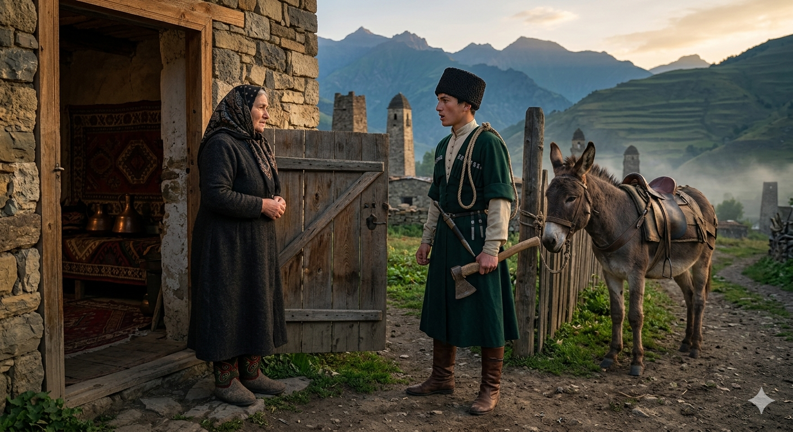

И.А. Дахкильгов. Хьехаме дувцарш - поучительные рассказы-притчи.
И.А. Дахкильгов. Хьехаме дувцарш - поучительные рассказы-притчи. Из ингушского фольклора.

Дади виц ма валийталахь
ХьоашалгӀа венача цхьан къонахчо хаьттад фусамдаьга: - ВоӀ миштав хьа? Даьна, нанна хоза новкъостал деш вий ер? - ВоллахӀи, талхаша-м латт, деш хӀама доацаш, айлаюкъенца мара сакъердам боацаш ва. ХӀанз сихха саг а йоалаяь, був а ваьккха, ше Ӏо ца хоавойяь, цунна фу дергда ма хац сона, - аьнна, леткъав фусамда. Из къамаьл хезад наӀар тӀехьашка лаьттача воӀа. ШоллагӀча дийнахьа сахилале хьал а гӀетта, диг ира а даь, ший вир дӀа а дежа, хьунагӀара дахча да водача воӀо ший наьнага аьнна хиннад: - Селхан вай хьаьшага ше дийцар диц ма де алалахь вай даьга.
РУССКИЙ
Пусть отец не забудет
Некий гость поинтересовался у хозяина: - Ну, каков твой сын? Помогает он своим родителям или нет? - Клянусь Всевышним, портится на глазах. Бездельник, все его мысли только о том, как погулять и повеселиться. Не знаю, что с ним делать. Думаю, может, незамедлительно женить его и отделить от себя, - пожаловался хозяин. Сын был в соседней комнате и слышал весь этот разговор. На второй день юноша, как никогда, встал рано, отточил топор, запряг осла и собрался поехать в лес по дрова. Выезжая со двора, он сказал своей матери: "Скажи отцу, чтобы он не забыл то, о чем вчера говорил нашему гостю".
ENGLISH
Let my father not forget
A certain guest asked the host: 'Well, what's your son like? Does he help his parents or not?' 'I swear by the Almighty, he's going to the dogs before my very eyes. He's a good-for-nothing; all he thinks about is going out and having a good time. I don't know what to do with him. I'm thinking perhaps I should marry him off straight away and get him out of my hair,' complained the host. The son was in the next room and heard the whole conversation. The following day, the young man got up earlier than ever, sharpened his axe, harnessed the donkey and set off for the forest to fetch firewood. As he rode out of the yard, he said to his mother: "Tell Father not to forget what he told our guest yesterday."
НОХЧИЙН
ПОГОВОРКИ
Був ваьннар цӀаьрмата верз. Отделившийся от общего хозяйства становится жадным.Даь доахан – виӀий фос. Скот (богатство) отца – добыча сына.Дезала даь корта кӀайбеннаб дезал кхийча. У отца семейства голова поседела тогда, когда выросли дети.Дукха лоаттабаь ды тӀаьнашха хиннаб. Конь, долго простоявший в конюшне, стал колченогим.Кхачанза баьккха сом миста хиннаб. Плод, сорванный раньше срока, бывает кислым.Кхоанарга яьккхача кетарах белжг мара хиннаяц. Отложили шитье шубы на завтра, а завтра из нее лишь душегрейка получилась.Мекъа саг хӀама даа хайча, маькара хул. Ленивый становится шустрым, когда сядет обедать.“Сахьата болх ца бе кӀира наб ергъяр аз”, - яхад мекъачо. Лентяй говаривал: “Чем работать один час, лучше спать всю неделю”.Сихвелча а дехке воал, сов дукха садетташ ваьгӀача а воал дехке. Поспешишь – пожалеешь, промедлишь – тоже пожалеешь.Тахан де йиш яр кхоаненга ма даккха: хоттаргда, аьнна, пхьидан (саь) цӀог хоттанза дисад. Что можно сделать сегодня, не откладывай на завтра: отложили на завтра лягушке (оленю) хвост приладить, да так и осталась бесхвостой.Ший ханнахьа чакх ца баьккха болх чакхбаккханза бисаб. Незавершенная в срок работа так и осталась незаконченной.Эшаш вале, лохаш хила. Нуждаешься в чем-то – ищи это.ЯьгӀача йоӀо нана-шайтӀа къардаьд. Засидевшаяся в девках одолела мать шайтанов.